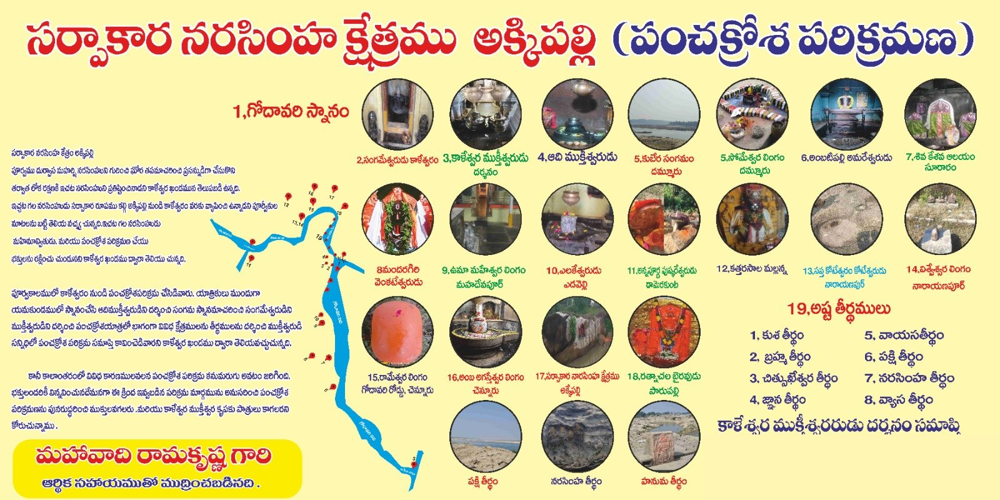

పరిక్రమణ క్రమ సంఖ్య: 17 వర్గం: పంచక్రోశ క్షేత్రం
పరిచయం / స్థల పురాణం
పూర్వం దుర్వాస మహర్షి నరసింహుని గురించి ఘోర తపస్సు చేసి ప్రసన్నుడిని చేసుకుని, తరువాత లోక రక్షణ కోసం ఇక్కడ నరసింహుని ప్రతిష్ఠించాడని కాళేశ్వర ఖండంలో తెలుపబడింది.
ఇక్కడి నరసింహుడు సర్పాకార రూపం కలిగి అక్కిపల్లి నుండి కాళేశ్వరం వరకు వ్యాపించి ఉన్నాడని పూర్వీకుల మాటల వల్ల తెలుస్తోంది. ఇక్కడి నరసింహుడు మహిమాన్వితుడు, పంచక్రోశ పరిక్రమణ చేసే భక్తులను రక్షిస్తూ ఉంటాడని కాళేశ్వర ఖండం ద్వారా తెలుస్తోంది.
మూలం: స్కంద పురాణాంతర్గత సనత్కుమార సంహిత – కాళేశ్వర ఖండం.
పంచక్రోశ పరిక్రమణ పటం
చిత్రంపై నొక్కి పెద్దదిగా చూడండి.

యాత్రా సమాచారం
కాళేశ్వరం ఎలా చేరాలి · దర్శన సమయాలు · వసతి · యాత్ర ప్లాన్ చేయండి · అన్ని క్షేత్రాలు